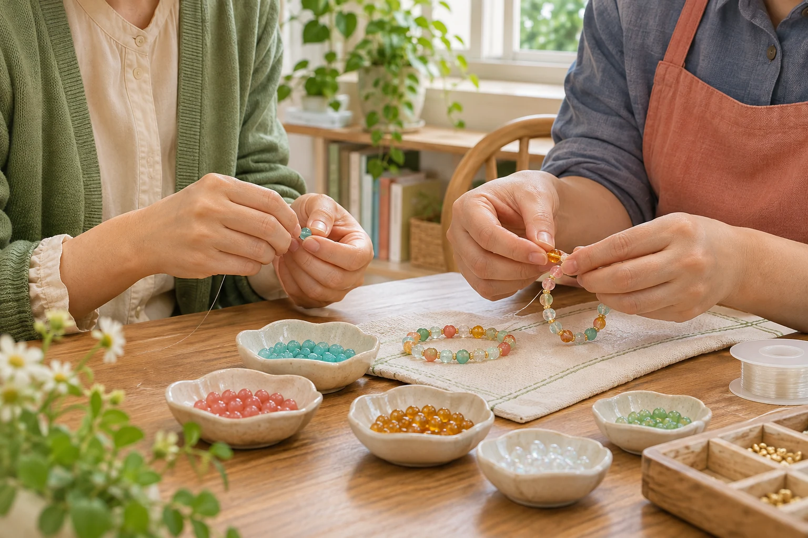
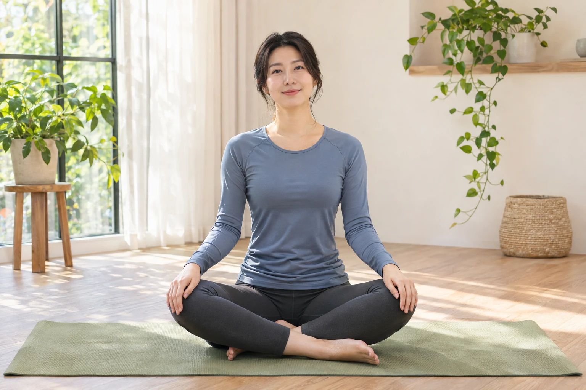
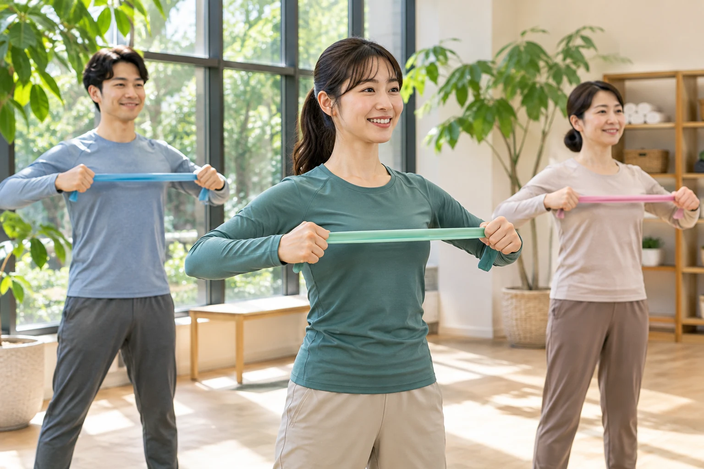
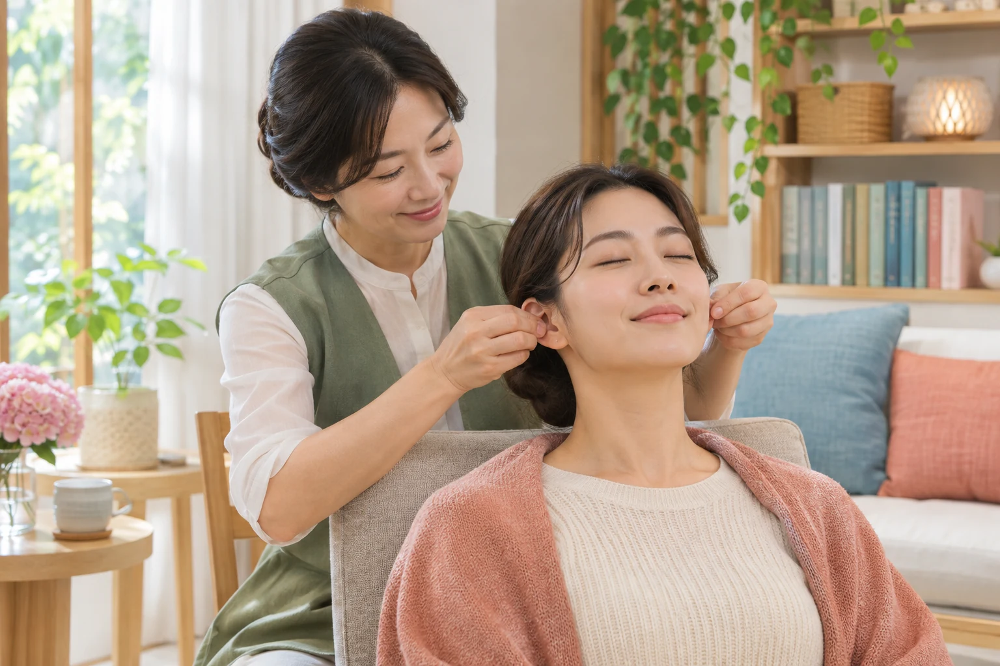
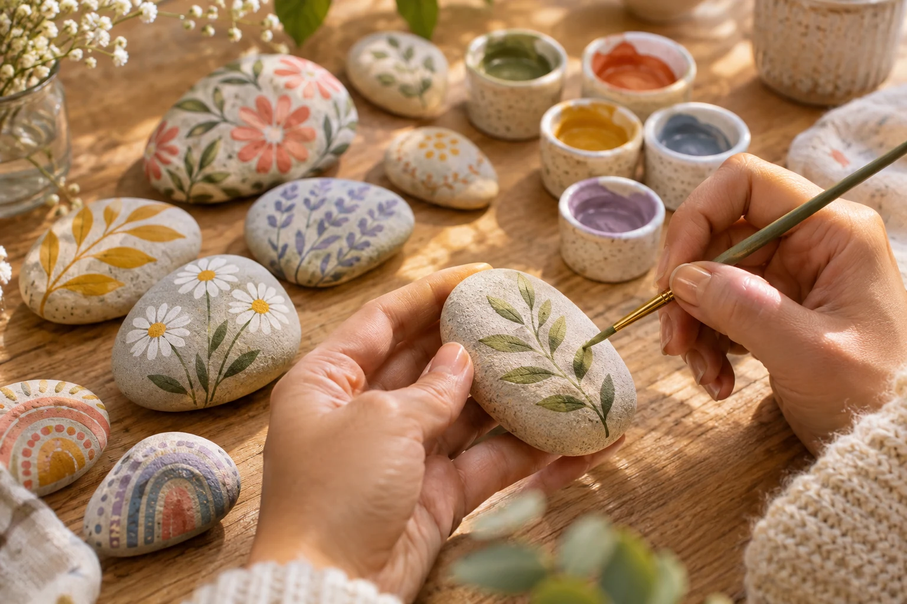
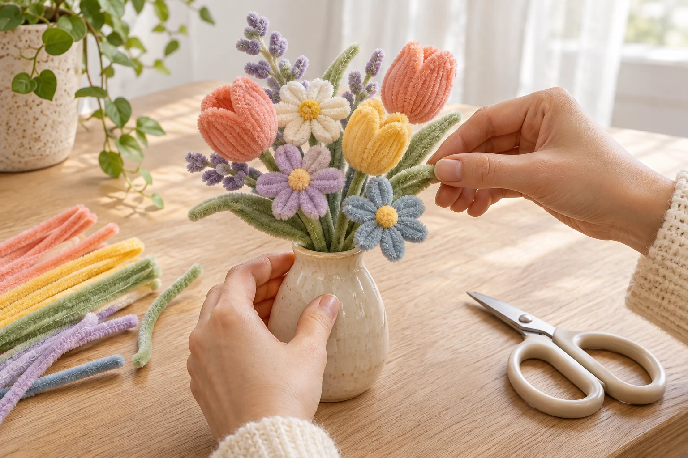

EVERYDAY DISCOVERY
손끝의 즐거움,
일상의 작은 발견.
몸을 움직이고, 손으로 만들고, 함께 놀이하는 경험. 마음이 끌리는 활동부터 만나보세요.
WINTER PROGRAMS
12월 체험프로그램
운영 안내 · 일정과 비용을 비교해 보세요.
10개의 체험프로그램

요가
호흡과 움직임에 집중하며, 내 몸의 감각을 천천히 살펴보는 시간입니다.
2026-12-07 10:0020,000원 / 회운영 안내 · 6명
자세히 알아보기
아이간식·이유식 레시피 만들기
아이의 식탁을 위한 간식과 이유식 아이디어를 함께 나누고 만들어 봅니다.
2026-12-11 10:0035,000원 / 인운영 안내 · 6명
자세히 알아보기
베이비 마사지
부드러운 접촉을 통해 아기와 교감하는 방법을 알아보는 체험입니다.
2026-12-12 10:0025,000원 / 팀운영 안내 · 5팀
자세히 알아보기
PT · 숨은 근육 찾아라
평소 놓치기 쉬운 몸의 움직임을 살피고, 근육을 사용하는 경험을 합니다.
2026-12-08 10:0040,000원 / 회운영 안내 · 4명
자세히 알아보기
이어테라피
귀의 구조에 관한 이야기와 가벼운 휴식 활동을 살펴보는 체험 프로그램입니다. 의료행위나 치료 효과를 전제로 하지 않습니다.
2026-12-10 14:0025,000원 / 인운영 안내 · 6명
자세히 알아보기
비즈공예
색과 모양을 고르고 엮으며, 나의 취향이 담긴 작은 작품을 만듭니다.
2026-12-12 14:0030,000원 / 인운영 안내 · 8명
자세히 알아보기
캘리그라피
한 글자씩 써 내려가며, 글씨에 나의 마음과 표현을 담아 봅니다.
2026-12-16 14:0030,000원 / 인운영 안내 · 8명
자세히 알아보기
스톤아트
돌의 모양과 질감을 살펴보고, 색과 그림으로 새로운 이야기를 더합니다.
2026-12-18 14:0025,000원 / 인운영 안내 · 8명
자세히 알아보기
엄마와 함께하는 미술놀이
색과 재료를 함께 탐색하며, 엄마와 아이가 만드는 즐거운 놀이 시간입니다.
2026-12-19 11:0035,000원 / 팀운영 안내 · 6팀
자세히 알아보기
모루공예
부드러운 모루를 구부리고 엮으며, 손끝의 상상을 작품으로 표현합니다.
2026-12-19 14:0028,000원 / 인운영 안내 · 8명
자세히 알아보기일치하는 프로그램이 없습니다. 다른 검색어로 찾아보세요.
YOUR NEXT MOMENT
마음이 닿는 시간부터 시작해 보세요.
원하는 분야와 일정을 선택하고 나에게 필요한 시간을 만나보세요.